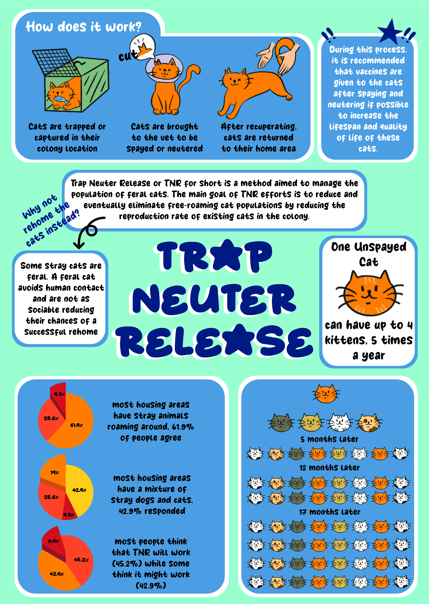

Trap Neuter Release
(TNR)
I chose one theme which was the stray animal dilemma in Malaysia and the topic that I chose in specific was TNR as a way to get a handle on strays in Malaysia.
I sent out a survey form with questions to find out the stray population/situation in their neighborhoods as well as how well they knew what TNR is or whether they had been exposed to this method before. I had also planned to use the data collected from the survey form to be included into my infographic piece.
In order to appeal to a younger audience I decided that I had to come up with a cartoonish cute mascot in order to catch their eyes. Through this project, I was able to learn how to create a mascot as well as how to use fonts and elements to create a piece that achieves the goal of appealing to a younger target audience.